投诉渠道
-
为推进我院 “创先争优”、“质量万里行”、“三好一满意”等活动的深入开展，提高我们的医疗质量，改善我们的服务态度，促使医德医风建设根本好转，特在服务大厅的触摸屏设立投诉渠道：
一、电话：0777-8337819
二、邮政信件：浦北县人民医院政工科
三、邮箱：pbyyzgk@163.com
四、意见箱：可投入各科室设立的意见箱内
五、网络：院内内网
以上如不署真实姓名和通讯号码，恕不受理。
浦北县人民医院
2011年11月13日 -
党员志愿服务进社区，为民宣传健康知识
4月27日，党员志愿者服务队走进小江社区，举行了“职业病防治、艾滋病防治、无偿献血等”的宣传活动，8名党员志愿者小分队参加了此次活动。
活动中，志愿者为过往的群众发放关于艾滋病防治等宣传材料，并为群众详细介绍什么是艾滋病，艾滋病有哪些传播途径及预防措施、职业病的防治等知识。这一活动正是在开展“质量万里行”、“三好一满意”活动的具体表现，党员志愿服务发扬了一个党员，一面旗帜的先锋模范作用，在岗位中创先争优，履行承诺，得到了群众的广泛称赞，在社会上引起了极大的反响。
活动旨在向社会宣传预防控制艾滋病和职业病等知识，广泛提高群众的自我保护能力。
-
1、以创先争优为契机狠抓医德医风建设
2、对口支援 服务提升
3、开展“全员参与，人人健康”职工体育活动
以创先争优为契机狠抓医德医风建设
在创先争优活动中，我院紧紧抓住医德医风建设这个关键，围绕开展“质量万里行”、“优质护理服务示范工程” 、“三好一满意”活动，不断提升医疗服务水平，促进医院科学发展。
今年上半年，我院把行风建设列入议事日程，积极开展医德医风教育。如干部职工的理想信念、服务宗旨、为民意识。通过组织举办职业道德讲座，观看警示教育片，使医疗为民理念人人皆知、入脑入心。开展医德医风承诺，在创先争优活动中，院领导班子及成员率先向全院党员和干部职工做出“加强学习、热爱事业，科学发展、与时俱进，联系群众、服务患者，勤奋工作、开拓创新，依法执业、维护团结，自律守纪、勤政廉政”的承诺；医院临床科室、设备科、药剂科等重点岗位做出“不开大处方、不收红包、不要回扣、不开单提成”等承诺。
健全工作机制，规范医疗诊疗行为。医院始终坚持用制度管人、用制度管事，制定和完善《医德医风考评实施方案》。落实行风责任制，进一步明确院领导、中层干部、医生、护士以及重点科室、窗口部门的人员职责，探索制定加强行风建设的有效办法，实行“一票否决制”。把医德医风纳入医院综合考核指标，将结果与年度评优评先、职称晋升、岗位聘任和绩效分配等直接挂钩。
树立医德医风榜样，激发创先争优热情。注重医院文化建设，在院内显著位置，公开医院办院宗旨、学科发展方向、科室简介、便民利民服务等措施，大力弘扬“慈爱济世、救死扶伤”的传统美德，营造“见贤思齐、比学赶超”的浓厚氛围。注重医德医风榜样引领，注重树立身边典型，立足岗位评先选优，组织开展“每月一星”评选活动，在创先争优活动中，评选一批医德医风优秀个人，优秀党员28名。通过评先选优，激发了全院医护人员立足本职岗位“学先进典型、正传统医德、树优良医风”的热情。
面向基层服务群众，建立和谐医患关系。为进一步做好支援乡镇卫生工作，提高基层卫生院医疗服务水平，方便患者就近得到较好的医疗服务，减轻农民经济负担，自开展创先争优活动以来，该院专门选派各临床科室业务骨干，奔赴六垠镇卫生院开展支援工作，开展各种义诊、教学、健康教育宣传等活动20多次，发放健康教育、保健手册2万册，受益群众10000余人。广大医务工作者认真耐心地为农民做健康检查，疾病诊疗，细心解答健康知识，得到农民群众的欢迎和支持，树立了良好的社会形象。
对口支援 服务提升
5月25日，钦州市第二人民医院领导、专家来到对口支援单位--浦北县人民医院，了解对口支援的有关项目，看望对口支援的医务人员，开展全面、广泛、深入的合作与交流。
随着两院间对口支援的不断深入，浦北老百姓将足不出户，就能享受到市级大医院专家的优质医疗服务，这既是一项民生工程，也是一项民心工程，这是浦北县90多万人民群众的健康福音，将进一步促进浦北县经济社会的科学发展。
我院历经近60年的风雨沧桑，特别是近年来突飞猛进的发展，已成为一所集医疗、保健、教学、体检的国家二级甲等医院、综合性医院。多年来，医院以科学发展观为指导，以国家医改政策为引领，先后已与省内外多家三甲医院建立协作关系。
近年来，我院在各级党委、政府和有关部门单位的关心支持，以及全院医护人员的共同努力下，发展迅速，业务指标连续攀升，专科建设明显加强，医疗队伍稳步壮大，医疗质量持续提高，为保障广大群众健康做出了积极的贡献。而钦州市第二人民医院是我市较大的三甲综合性医院，医疗技术力量雄厚、设备先进，拥有一支高素质的临床、科研和教学队伍。今天，市二医院对口支援工作的顺利开展，是一件非常有意义的事，这既有利于提高我院医务人员的业务素质，提升医疗技术水平，保障广大群众的医疗服务需求，又有利于借助这一医疗服务平台，实时有效地解决群众的“看病难”问题，使广大群众不出县也可以享受到市二医院专家的优质医疗服务。
我院也将以此为契机，内强素质，外树形象，进一步深化内部运行机制改革，狠抓管理体制创新，切实提高医疗质量和服务水平，不断增强整体实力。市二医院也充分发挥医疗、教学、人才等资源优势，切实加强对我院的指导和帮扶，促使其医疗技术水平上台阶，为保障广大群众健康做出新的更大的贡献。
开展“全员参与，人人健康”职工体育活动
积极开展文化与体育活动是我院传统的精神财富，一直以来紧紧依靠工会、女工委、共青团等群团组织，不断地开展了各种大型文娱体育活动，做到一年一个主题，年年都有新意，达到了活跃气氛，凝聚人心，陶冶员工思想情操，提升医院文化品位的目的，在浦北获得良好的社会反响。
5月30日，我院在广场举行 “全员参与，人人健康”为主题的夏季职工气排球体育活动。此次活动历时6天，全院各科室分成36个组队将要完成100多场次的比赛。在开幕式上，县政协副主席、文体局局长龚义师、县直属工委黎锦隆副书记、团县委黄静惠、李增雷副书记、县卫生局刘火副局长、县卫生系统工会陈仕钊主任、县总工会副主席刘廷辉到会指导。
比赛期间，既体现了各队龙争虎斗，胜负难分，通过角逐好不容易的分出了一、二三等奖，又展示了医院精神文明建设，培养了职工的团结协作、竞争向上的精神，也对于增强职工身体素质，使职工以更加充沛的体力、精力投入工作中去。推动了医院 “质量万里行”、“优质护理服务示范工程”、“平安医院”、“三好一满意”活动的深入开展。
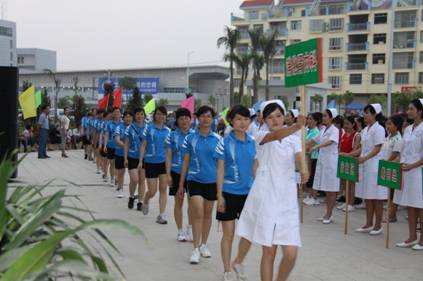
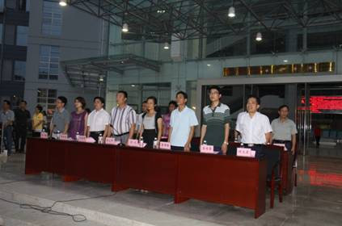
-
专科专家志愿者深入革命老区为当地群众义诊
正值纪念中国共产党成立90周年之际，为了忠诚实践“三个代表”重要思想，深入开展创先争优活动，2011年6月10日上午，由我院党员志愿者组成的医疗服务队一行27人,深入大成镇革命老区---甘子根村，开展送医送药上门服务，为当地群众义诊，受到了群众的欢迎。
由支部书记、副院长陈小聪带队开展了以“当先锋、颂党恩、抒豪情”为主题的义诊活动。党员医生充分利用西医、中医、骨伤等专业知识，为当地群众解除病患，提高他们生活质量。前来看病的村民多数是老人，最老的为85岁。在义诊的过程中为村民发放了免费药品，进行了预防常见病的宣传教育，还利用传单、健康手册等形式大力宣传农民生活中所需要的医学保健知识，如：糖尿病的预防、饮食禁忌，“三高”（高血压、高血脂、高血糖）人群的饮食、常见并发症等等。
通过此次活动，为老区群众送上我们真诚的服务。广大党员在人民群众中真正接受了一次思想的洗礼，真正体现出新世纪共产党人时刻牢记全心全意为人民服务的宗旨，不忘艰苦奋斗的本色，树立正确的人生观、世界观和价值观，永葆共产党员先进性，发挥了共产党员的先锋模范作用。
此次义诊活动共诊治病人160多人次，发放免费药品约1万多元，发放各种宣传资料300多份。
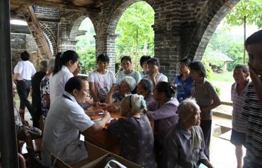
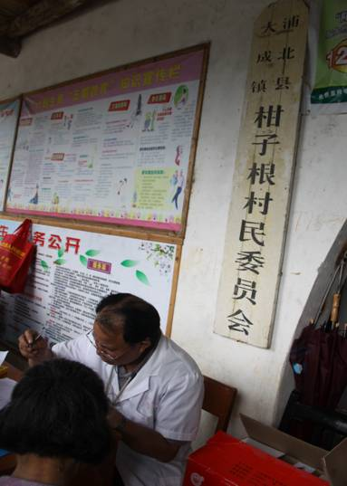
-
加强出院病人的回访，让群众对服务更加满意
前两年我院已经成立了回访中心这个机构，主要的工作职责是对出院患者健康状况和住院期间的满意度回访。今年我院在开展“创先争优”、“质量万里行”、“优质护理服务示范工程”、“平安医院”、“三好一满意”活动中加大对出院病人的回访服务，充实人员，完善机制，提高回访率。上半年通过回访，深受群众欢迎，满意度提高。
回访中心负责人说：不管形式如何，电话也好、亲自上门也好，一句简单的问候，体现了我院对患者的关爱，更深入的体现了我院“人性化、专业化服务”的宗旨，也拉近了患者与我院之间的距离。
回访前，工作人员应该掌握出院病人的具体信息，病情而定，还需遵循为患者诊治的专家意见，有针对性的对患者进行治疗后的回访。此外，爱心回访的项目还包括虚心听取患者对医院服务、环境、治疗等各环节提出的意见和建议，及时整合报告，将患者的心声融入医院日后的各项建设工作。
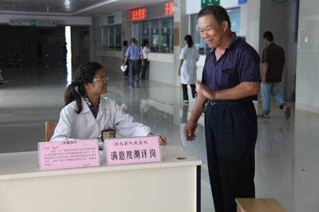

以电话形式开展的“爱心回访中心”受到了许多患者的欢迎。正在就医的一位患者向笔者说到，开展电话回访的医院并不太多，但却正是广大患者最希望看到的。患者一般都比较爱面子，面对面的交流可能会有很多话无法说出口。电话的回访形式就很好的避免了尴尬，患者也能放松身心全面的和医院回访人员交流，这样起到的效果也比较好。
近日，一个出生体重只有1100克的极低体重儿，在妈妈温暖的怀抱中，顺利地在浦北县人民医院新生儿科出院了。
据了解，新生儿体重小于1500克为极低体重儿；小于1000克为超极低体重儿。极低体重儿必须闯过呼吸关、感染关、并发症关和静脉营养关，成活率只有50%。
新生儿科李主任介绍说，极低体重儿父亲姓易，家住在平睦镇新塘村，送到新生儿科时，由于早产，生命体征极度虚弱，出现呼吸急速、体温不升、喂养困难等症状，情况很危险。
据了解，极低体重儿出生后没有住院治疗，家属就抱回家予以婴儿配方奶喂养，进食少。后经医院回访中心回访，得知极低体重儿患病，来回做了多次思想工作，家属才把患儿带到医院。经检查，确诊为新生儿肺炎、早产小于胎龄儿、新生儿病理性黄疸。
针对现状，医生设计了治疗方案，再三叮嘱家属要按照要求喂养和生活。经过一周精心治疗，患儿体重逐步增加，进食由原来的只有4-5毫升，上升到30多毫升，呼吸系统、消化系统同刚出生时相比已经有了“质的飞跃”，能够独立进食和自主呼吸，身体各项指标基本达到正常婴儿标准。
-
创先争优无止境 “服务之星”显风采
为深入开展“创先争优”、“质量万里行”、“优质护理服务示范工程”、“平安医院”、“三好一满意”等活动，提高我院的服务能力与水平，树立医院新形象，我院于4月起启动了“服务之星”的评选工作，经自下而上层层评选与推荐，办公会研究决定产生了杨松等59位第二季度医院岗位服务之星。
一是人人争当服务之星，提高医院整体文明素质，立足服务大局，大力弘扬“对病人满腔热情，对工作认真负责，对技术精益求精”的行业作风，积极培养“爱岗敬业，乐于奉献”的行业精神，积极推动医院各项工作可持续的健康发展，树立起一批全心全意为人民服务的典范。二是使广大医务人员学有榜样，赶有目标，服务之星的评选是窗口单位和服务行业开展为民服务的重点举措。在工作中充分发挥先进典型的引领示范作用，形成为民服务、人人争当先进的良好氛围。
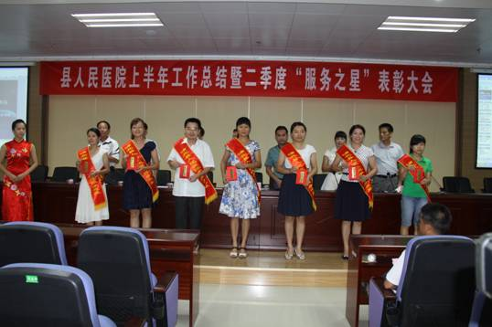
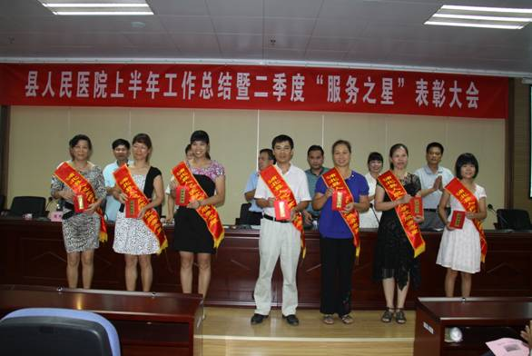
-
1、医疗技术服务再提高 产妇送锦旗表谢意
2、我院开展“优质护理服务示范工程”效果好
3、医生为病人“交”住院费拒收病人红包的新方式
医疗技术服务再提高 产妇送锦旗表谢意
一面面写有“医术精湛 护理细心”、“巾帼示范岗 优秀服务”、“热情接待 态度服务好”的锦旗，充分表达了来自县内外产妇对我院产科医护人员的感激之情。近日，产科护士拿着7封/面感谢信和锦旗来到政工科记录备案。
“浦北县人民医院产科实行的‘四对一’全产程陪护制度以及引进的镇痛技术让我们产妇很轻松就能完成分娩。”这是出院患者刘晓慧女士在感谢信中讲的。据了解，为了保障妈妈的安全、孩子的健康，及时发现生产过程中存在的问题并及时有效地解决。产科实行“四对一”全产程陪护制度。即一名医生、二名助产士及一名新生儿科医生为一位孕妇提供全产程服务，为产妇及新生儿保驾护航。在助产士全产程陪护过程中，临床经验丰富的助产士们除了应对产程中的突发情况，还会帮产妇消除紧张情绪，给予生理、心理和感情上的全程支持，帮助产妇以一种更积极、放松的心态迎接分娩。
产科给刘女士采用的镇痛技术是最新引进的无痛分娩技术。镇痛分娩技术的三个优势深受孕妈们的青睐，一是保障母体及胎儿健康；二是可增进夫妻感情；三是减少药物的使用，将生产的疼痛降低至人体可以忍受的程度。
产科专家介绍，凡选择在人民医院分娩的孕产妇，从怀孕7个月开始一直到分娩，专家会对孕妇们传授“生产呼吸法”的技巧，不断地练习各种肌肉放松和呼吸技巧，让产妇在分娩时将注意力集中在对自己的呼吸控制上，适度放松肌肉，从而转移疼痛，临床证明，这一技术不仅能减少药物的使用，让产妇在产痛和分娩过程中保持镇定，将生产的疼痛降低至人体可以忍受的程度，保障了母体及胎儿健康，能加快产程，缩短生产时间，而且有助于婴儿顺利出生。另外，由丈夫陪伴在一旁协助孕妇练习这种呼吸方法，更可促进夫妻间的感情。
产科张主任也表示，医院始终提供这种感动式的人性化服务，真正做到以病人为中心。让产妇全程无忧，让每一位产妇都能真正感觉到家一样的温暖。
在开展创先争优活动中，我院围绕“三好一满意”、“质量万里行”活动主题，把握“服务至上”宗旨，实施“两推进两创建”举措，着力推进医院各项工作的持续、快速、健康发展。
我院开展“优质护理服务示范工程”效果好
在推进“创先争优活动中”的进程中，我院将护理工作与“优质护理服务示范工程”活动相结合，开展了以“实行护理人性化关怀，为患者提供温馨服务”为主要内容的优质服务活动，同时注重对护士的人文关怀，在全院护理人员中开展了“爱心天使”的评选活动。
活动思路科学创新。院领导班子和广大职工坚持以“病人为中心”，从完善设施、美化环境、从严管理、文明服务入手，以良好的院容、精湛的医术，围绕医疗护理“质量、安全、服务、效益”工作思路，创新思想，科学管理，规范服务行为，狠抓工作落实，为病员提供了形式多样的优质服务。
医德医风不断提高。活动中，全体护理人员职业道德不断提高，热情为病人提供优质服务的好人好事层出不穷。每人每天只要上班就为病员做一件好事。在各科室护士长带动下，天天都有“爱心天使”陪伴病员，全院护理组形成了一个“爱心天使”团队。每个科室结合自身特点，从一点一滴的细微工作入手，帮助患者解决实际问题，从基础护理着手，实践着“优质护理服务”的贴心工程。
业务素质不断进步。为提高全院护理人员的素质和业务水平，我院坚持以岗前培训为基础，以岗位培训为重点的政策。在狠抓“三基三严”业务水平提升的同时，不断强化护理人员的综合素养，定期组织护理学术讲座，技术操作训练和考核，选派护士外出进修，造就了一批高素质的护理队伍，真正满足了广大患者的健康需求。
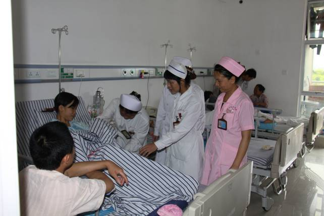
便民服务不断增添。为方便患者就医，病房提供导诊咨询服务，免费提供饮用水，配置候诊椅、轮椅、电话等设施，有专门护士义务护送病人出入院。为强化护患沟通交流，给每位新入院患者发放回访卡、《住院须知》等。为让患者明明白白消费，医院各个护士站都备有电脑查费系统，实行每日清单制，让患者能够随时了解自己的消费情况。同时还在各区域走廊设置宣传板，定期将有关疾病防治小知识张贴上墙，供患者阅读、了解、掌握有关、相关疾病的防治知识，进行健康教育。
在积极响应卫生部“优质护理服务示范工程”的活动中，立足自身，突出重点，抓住关键，力求在医院护理管理中建立一种新型的服务观和一种新型的护患信任关系。一朵花开不是春，百花齐放春满园。“爱心天使”评选活动的开展，使我院上下呈现出一派欣欣向荣的大好景象，促进了医院的持续健康发展，为更好的完善为民服务体系奠定了基础。
医生为病人“交”住院费 拒收病人红包的新方式
在创先争优活动中，切实加强行业作风建设，真正落实在行动上，长期以来，我院制定了一系列措施，对医务人员明确规定严禁收受“红包”。
近来，我院ICU的李健、骨一科的王栋、社工科的高燕等同志拒收红包的行为，成为我院医德医风建设的一个亮点。医院号召全院员工向他们学习，发扬白求恩精神，热诚为人民服务，力争保持复杂医疗环境中的一片净土，树立好白衣战士的光辉形象。
从事医务工作的确是一项辛苦的职业，既付出脑力又要付出体力，特别是一线医务人员，奉献休息时间多，尤其是节假日不能正常休息。让病人获得健康的喜悦是外人无法体会的。患者为了表达感激之情，给医务人员送红包，那是人间常情，当难以拒绝时，医务人员都主动到住院处给患者交作住院费用。
“红包”问题是广大群众关心的热点难点问题，事关医院的社会形象和声誉，人民医院在管理、制度、监督等方面多管齐下，建设高尚的医德医风，以实实在在的成效取信于民。以救死扶伤为天职，恪守职业道德，把病人利益放在第一位，努力为群众提供优质、高效的医疗服务。
-
1、便民直通车开到家门口
2、建立医疗信息平台 实施“门诊一卡通”
便民直通车开到家门口
我院新区座落在县城的环城公路、金浦大道交叉点，是县城的西郊，新开发的金浦小区离老城区中心一公里多，目前，还算偏僻。随着浦北县城建设的飞速发展，周围高楼林立，居民小区连片。县城扩大，人口增多，交通暂欠发达，居民到医院看病不仅要在路途上花费时间，常常耽误治疗，而且还要支付交通费。“什么时候医院能把便民车开到家门口就好了”！来自于患者的呻吟声。这一声及时反馈到了医院的领导耳边，引起了院领导的高度重视，经过讨论达成共识：“人民医院的宗旨就是全心全意为人民服务”，也是开展“三好一满意”如何做到服务好？那么我们就要多出措施，惠及群众。群众的需要就是我们的努力方向，也是医院开展创先争优活动的新举措。医院决定购进两辆电汽车，命名为“青年文明号”、“创先争优号”，开到群众的家门口，以解决群众就医难的问题。电车于2011年11月11日上午开通了，居民坐医院的电车来看病，就诊完毕后再坐电车原路返回，既省去了居民的时间，又节省了路费和就餐的开支，电车的驾驶员态度热情，对腿脚不便的病人还主动搀扶，对此，居民是打心底里欢迎便民车。这一开通启用，一一为群众办了件实事，一一受到群众的青睐，一一提升我们医院的品牌形象。
目前，人民医院的便民车线路行驶在医院新区---至医院东区---至鲤鱼岭住宿区往返对开。
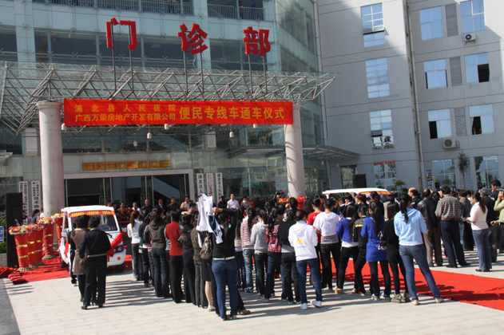 便民专线车开通仪式 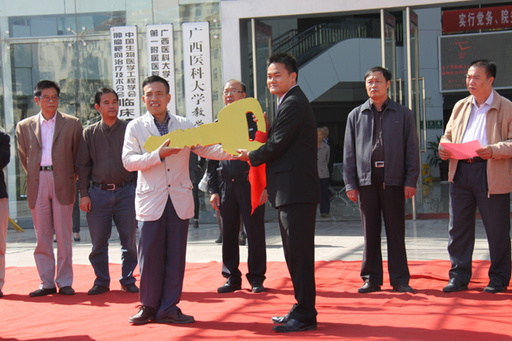 便民直通车钥匙交接 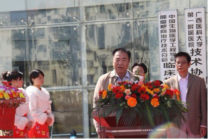 县政协副主席龚义师同志宣布便民车启动 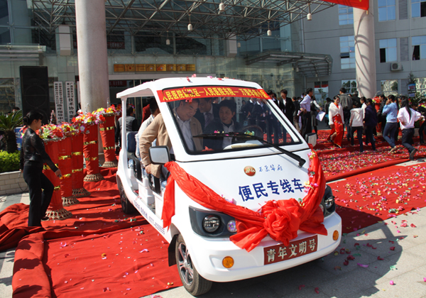 青年文明号、创先争优号便民专线车 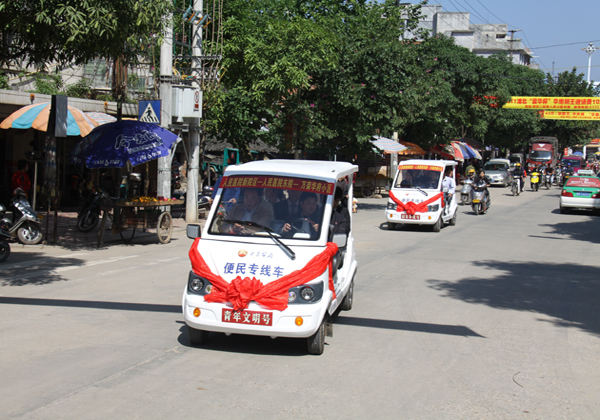 便民专线车行驶在街道上建立医疗信息平台 实施“门诊一卡通”
到医院看过病的人都有切身体会，尤其是在大医院，“看病烦”的现象非常突出，集中表现为“三长一短”，即挂号排队长、缴费排队长、取药排队长，医生看病时间短。患者看一次病需要排4次队（挂号、候诊、付费、取药或检查），大量时间都消耗在非医疗上。其主要原因是医疗机构内部信息沟通不畅。
针对上述问题，我院根据“三好一满意”活动开展的要求，全面落实年初钦州市卫生工作会议精神，通过半年多的努力，建成了医疗便民服务网络平台“门诊一卡通”。“门诊一卡通”工程是利用现代信息技术，在医疗保健活动中建立集“识别个人身份、医疗服务、预防保健、费用支付”为一体的数字化健康信息管理体系，通过“一卡通”所记录的个人身份及医疗保健信息，依托区域卫生信息平台，可实现医院间的个人医疗服务信息共享，建立个人终身健康档案，将大大方便患者就诊。
2011年11月13日上午“门诊一卡通”在我院正式开通。
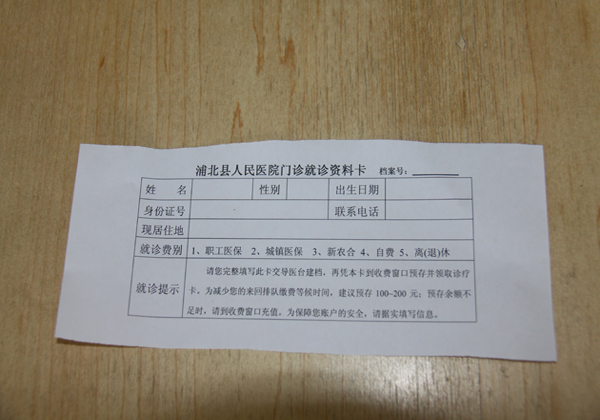 门诊就诊资料卡 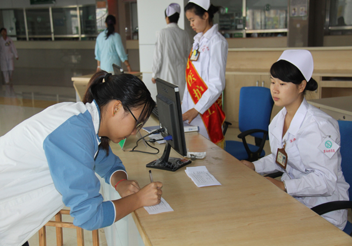 患者在门诊大厅服务总台建立“一卡通”资料信息 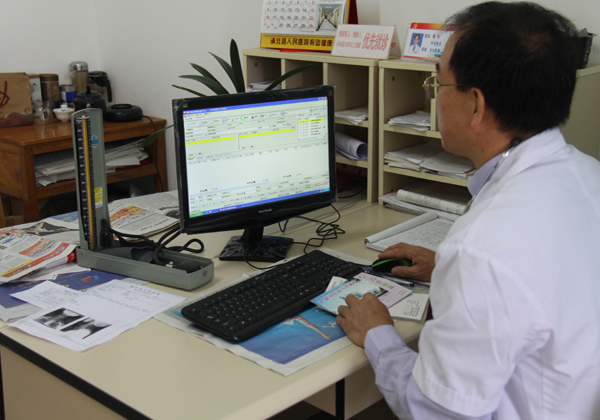 外科诊室医生在操作电脑处方 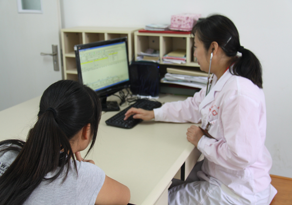 内科诊室医生为患者诊病 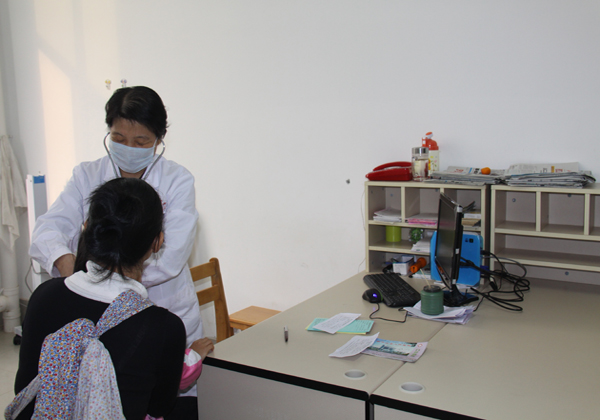 儿科医生为患者诊病 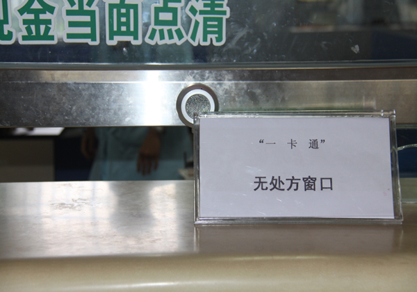 收费处设立“一卡通”无处方窗口 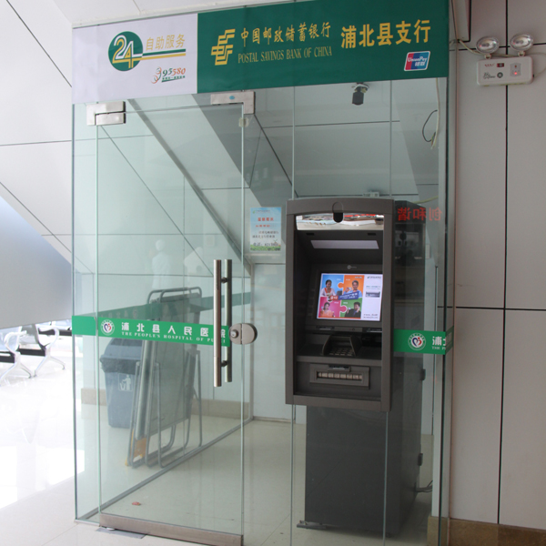 银行部门在医院门诊大厅设立自动取款机 -
投诉处理反馈
2012年4月14日，门诊收费处张路在收费服务过程中受到患者家属的投诉。经查，患者提出要清单，由于业务不够熟练，迟迟没有提供清单，并且解释语气生硬。按管理方案作经济处罚100元并思想作风教育。于4月24日将调查核实情况反馈给患者。
2012年4月18日，普外二科、医学影像科受到患者的投诉，患者提出要看CT检查结果，大半天没有给予提供。经查，医学影像科平时送报告单和片是下午5点钟前到相应科室的，普外二科医护人员也未有很好地与患者说明清楚。于4月25日直接到病房反馈给患者。以后工作中要加强沟通，完善流程。
2012年5月12日，门诊收费处邓承琳在服务过程中受到患者投诉。经查，由于患者缴费提供的是一百元面额钞票，没有零钱找补，而且解释语气声音重。核实后按管理方案作经济处罚100元并进行医德医风教育。于5月23日由回访中心反馈给投诉人。
2012年5月12日，有门诊医生用白纸条开处方给患者到院外药房购药，药名为呵莫西林舒巴旦片，二宝片。由于不懂购药渠道咨询了门诊导医，随后门诊导医将此情况反映给相关职能科室。相关职能科室进行调查并对其作治理商业贿赂、医德医风警示教育。
2012年5月22日，西药房杨帆、彭国媛在服务过程中受到患者家属的投诉。经查，工作由于不够细心，在药袋错写了他人的名字，患者当场也没有核对，回家后发现名字不对不敢用药。经调查核实后对两位当事人按管理方案作经济处罚100元。于5月24日将调查核实情况反馈给患者。
2012年5月26日，输液大厅护士覃瑜在服务过程中被患者投诉。经查，输液过程中未及时给患者换药水，造成输液管有空气，尔后在处理时把针头搞脱了，导致患者不满意。
2012年6月15日，儿二科李海洋在服务过程中受到患者家属的投诉。经查患者家属住走廊加床，要求有出院的患者后搬进病房。对被投诉者作解释沟通工作不到位。调查了解后进行了教育，于6月20日电话反馈给患者。
2012年6月19日，神经外二科和耳鼻喉二区的护理人员在服务中受到患者家属的投诉。经查，患者在皮肤诊室看病后，根据医生开的皮试申请检查单到相应的科室进行检查，在该科等候了半个多钟头后，护士在给患者操作，经查，罗静、张绍程、黄永媚有推诿病人的现象。调查核实后对以上三位进行医德教育，要求当事人主动向患者家属回访一次并将接受教育进行反馈。
2012年6月20日，门诊输液大厅护理人员在服务中受到患者家属投诉。经查，当天下午上班的有秦琼、卢善彩、黄静，实习护士彭敏、黄玉芳、容靖。在给患者静脉穿剌时，只有三位实习生操作，时间用了10分钟左右，才给患者吊上针。患者在吊针过程中，身感发冷，实习护士束手无策，患者很有意见，然后投诉。医院将按管理方案对当事人进行教育与处罚。
2012年6月25日，西药房陆立春受到患者家属的投诉。经查，凌晨3点15分左右，患者家属从按铃叫值班人员到取药共等候时间为23分钟，因患者要吊针，最后投诉。经调查核实后按管理方案给予医德医风教育并作经济处罚100元。6月27日将处理情况电话反馈给投诉人。
2012年6月12日，消化内科的胃镜室医务人员在服务中受到患者投诉。经查，做胃镜检查无痛或普通检查均按预约排队的顺序执行，可是在排队过程中，投诉人是做普通的检查的，排在前面和后面的均是无痛检查，麻醉医生来了就操作无痛检查，患者有意见，只因沟通说明不到位。对该科室的医务人员进行警示教育，但由于投诉人不愿意留下电话号码，无法反馈。
2012年7月8日，门诊收费处收费员邓承琳在服务过程中受到患者的投诉。经查，一位坐骨神经痛的患者给100元购买一本0.5元钱的门诊病历，没有零钱找补，患者要求在购药时一起结算，我们的工作人员不接受，造成患者不满。核实后按医院管理方案对当事人进行医德教育并处罚100元，7月10日电话给予反馈。
投诉科
2012年7月12日